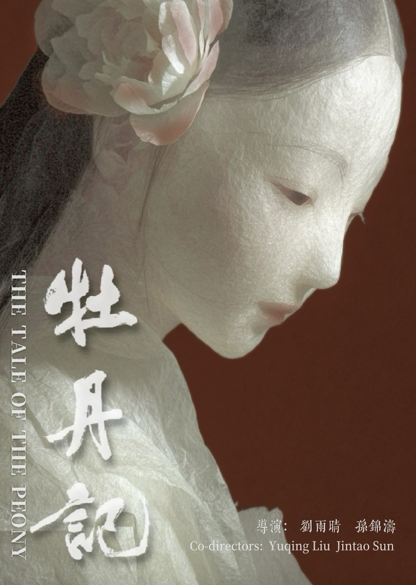

The Tale of the Peony is an AI-generated experimental short film inspired by the life of the late Tang dynasty poet Yu Xuanji. After entering a Taoist convent, Yu Xuanji buries a lock of her hair in the courtyard, and the peony there gradually takes on an eerie crimson hue. A young scholar, Wang Sheng, comes to visit out of curiosity, but their brief encounter soon triggers a strange calamity. Blending the tradition of Chinese zhiguai tales with a surreal visual style, and drawing on the aesthetics of traditional Chinese paper-sculpture intangible cultural heritage, the film portrays the fate of women under structural oppression in traditional society.